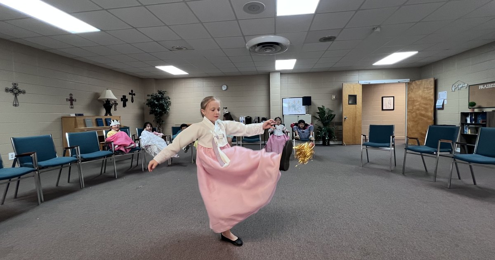
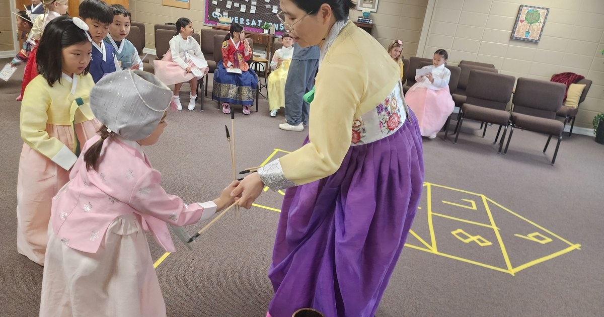
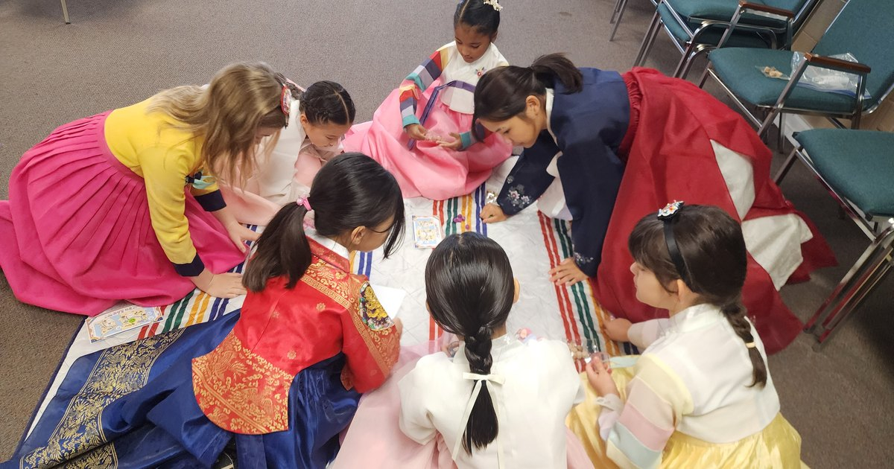
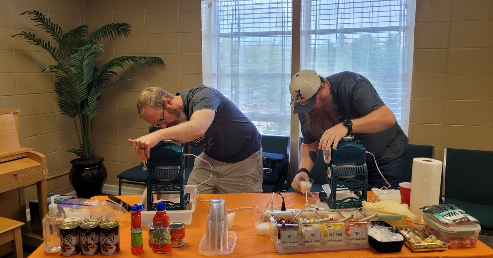
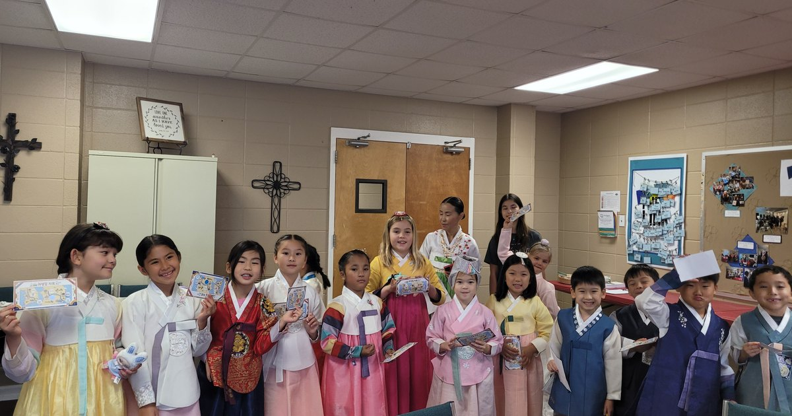
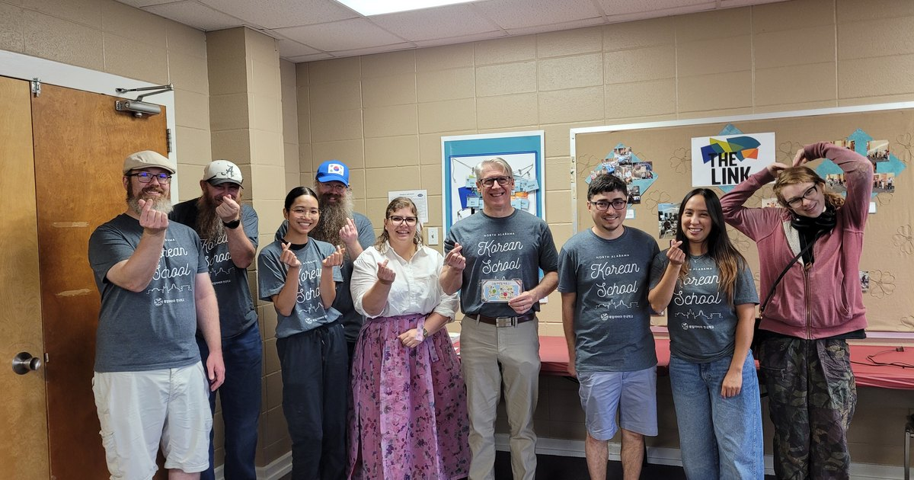

On September 26, the North Alabama Korean School held a Chuseok celebration for the whole school. Built around the theme of the 'Chuseok road home,' the event had students set out from Seoul and travel in turn through Cheonan, Daejeon and Daegu to Busan, visiting five 'Chuseok rest stops' along the way.
Each student carried a 'homecoming ticket' from one rest stop to the next. Every rest stop had prepared an activity drawn from Korean culture, history, tradition or food, and each time a student finished one, a stamp was added to the ticket. Collecting all five stamps completed the journey from Seoul to Busan.
The event was arranged so that students could step away from the ordinary classroom lesson for a day and take in the culture of a Korean holiday naturally, by seeing, making and experiencing it for themselves. The students set out on the road home dressed in hanbok.
First rest stop, Seoul — biseokchigi
Seoul, the starting point of the journey, was led by Ko Hyun-i. Students set a small stone upright and threw their own stone to knock it down — biseokchigi, a game that asks you to judge both your strength and the distance, and one Koreans have long gathered in the yard to play at holiday time.
Second rest stop, Cheonan — jegichagi
At the Cheonan rest stop, Lee Ji-na led jegichagi, the Korean shuttlecock game. Students took on the mission of kicking the jegi three times, and younger students, for whom kicking is difficult, took part by tossing the jegi up with a hand and catching it instead. It was a thoughtful arrangement that let every student, whatever their grade, carry the game through to the end at their own level.

Third rest stop, Daejeon — tuho and sabangchigi
The Daejeon rest stop, led by Choi Hyun-ju and Cho A-ram, prepared two games. In tuho, students threw sticks from a set distance to land them inside a cylinder; in sabangchigi, they hopped on one foot across squares marked on the floor, moving a stone as they went. In both, waiting one's turn and cheering for the others was part of the game, and students fell into playing together naturally.

Fourth rest stop, Daegu — gonggi and patbingsu
The Daegu rest stop was led by Vice-Principal Lee Owen and Yu Seon-ha. Students took on gonggi, the Korean jacks game, working up a step at a time from catching one stone to catching two. True to its name, 'the cool rest stop' also served every student a bowl of freshly shaved patbingsu, with red bean, rice cake, pineapple and strawberry set out so each could choose the toppings they wanted.


Fifth rest stop, Busan — ganggangsullae
At Busan, the end of the road, Cho Seung-yeon and Lee Sun-ok led ganggangsullae. Students joined hands in a circle and moved slowly to the song, calling out "ganggangsullae, ganggangsullae." Ganggangsullae is a song and a dance performed hand in hand under the full moon of Chuseok, and it was inscribed on the UNESCO Representative List of the Intangible Cultural Heritage of Humanity in 2009.
Prepared together, shared together
Students who had gathered all five stamps completed the road home from Seoul to Busan and held up their tickets to show it. A holiday they had met in the classroom through words and pictures became, for one day, something they travelled through themselves.

The school extends its deep thanks to the Parents' Association, whose help made this an occasion as full and as grateful as the meaning Chuseok itself carries. Particular thanks go to Jonny and Justine of the adult Korean class, who lent the shaved-ice machine and spent three hours making bingsu for every student in the school.

Teachers, parents and adult-class students prepared the day together, and it gave the students a Korean holiday they will remember for a long time.
We hope the enjoyment the students felt that day, and the generous spirit of the holiday, carry on naturally into the lessons and the classrooms ahead.
The North Alabama Korean School will go on creating occasions where students can learn Korean language and Korean culture not only inside the classroom, but by seeing, making and enjoying it for themselves.